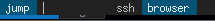
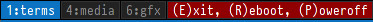
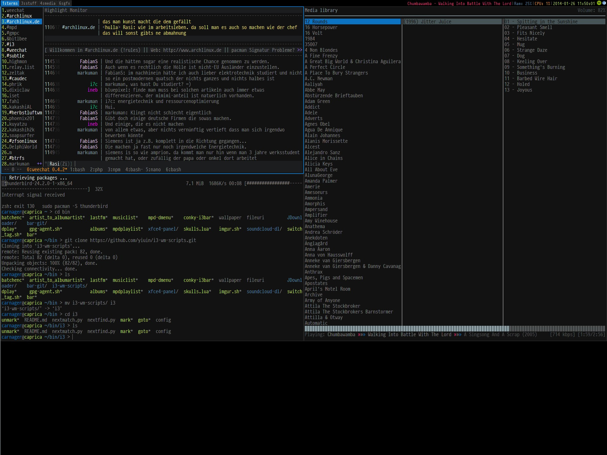

Bugs! They are Everywhere!
After a few weeks of usage fluxbox turned out to be really nice - but at the same time it turned its nasty second face towards me, screaming “BUGS!” all the time. If you have read my last post, you could already see some of it in there. To make other panels work correctly, you need a patch. Positioning of windows is buggy, its nearly impossible to place windows pixel perfect on screen via rules. In worst case the same MoveTo command reacts differently each time, resulting in slight jumpings of the windows. No major issue, but it left the feeling of hackish, uncomplete software - even tho everything worked so far. Multihead also doesn’t work as it should - fluxbox freezes when plugging in another monitor. While this does not affect me yet, I am planning to buy another screen soon, so I was looking for a viable alternative with better multihead support.
I looked for alternatives to clone my subtle/fluxbox setup once again. Only viable options were pekwm and openbox, which I simply don’t want to use. PekWM for some nasty bugs and openbox for its configuration. So I headed back to the world of real tiling WMs. I wanted an easy-to-use config file, which - frankly - only left 2 possible candidates: i3 and herbstluftwm. For now I decided to go with i3, since I had some experiences with it. But I always wanted to play with hlwm too - maybe next month :).
Say hello to i3!
So whats in i3? Well, primary it offers some easy to understand workflow. First of all, i3 is not as manual as subtle is. Windows get split automatically. Open a 2nd window and both windows will fill 100% of your screen. Either split (horizontally or vertically), tabbed or cascaded (same as tabbed, but window titles are above each other, instead side-by-side). With each window you open, another split is created - once again - horizontally or vertically. Thats all there is to window management, really. But it has some nice features which make using it a joy:
The Scratchpad
The concept of a scratchpad is not new. Basically a window that is in a scratchpad can be hidden/shown at any time on any workspace. But i3 goes a little further. You can have as many windows in your scratchpad as you like and show only the one you want with one keystroke. Configuration of this is easy:
bindsym $mod+Mod1+1 [class="xv|MPlayer"] scratchpad show
This will create a hotkey to show any window in scratchpad that matches the given class - in this case MPlayer. You can also have windows opened directly in scratchpad. Useful for tools you want to have open all the time, but not visible - and they lack a tray icon. Example keepassx:
Marks and Jumps
Another nice feature are Jumps and Marks. Both basically do the same thing. You have a hotkey that takes you to a specific app. With jumps all you have to do is this:
bindsym $mod+Control+1 [window_role="ssh"] focus
This will instantly focus my terminal with WINDOW_ROLE “ssh” when hitting the hotkey. On whatever workspace/screen this window may be. Pretty neat.
Marks basically do the very same thing, but they tag the windows. To make things a little more convinient I got myself some little i3 scripts that handle this with help of the wonderful dmenu. The scripts are available here. Set up the scripts in your i3 config:
bindsym $mod+Shift+g exec $HOME/bin/i3/mark bindsym $mod+g exec $HOME/bin/i3/goto
Now you can tag a window with mod+g and show available tags with mod+shift+g. This will look like this:
Setting a mark

As you can see, this gives you a nice dmenu styled application choser, which only shows your tagged windows. While jumps are quicker to use, marks are simpler, as you dont have to remember which hotkey you associated with what application.
Modes
This is a very clever way of having specific tasks in a vim like fashion. It 100% integrates into your panel. Basically this gives you chained keybindings with a visual clue. i3 comes with one mode by default: Resize mode. Hitting the appropriate keybind will show a red “Resize” in your bar. This tells you that normal hotkeys won’t work at this moment. Instead you can only use defined hotkeys to trigger actions. In case of resize mode these are the movement keys to make splits/windows smaller/bigger. Pretty neat.
I created (stole) myself a custom mode, that prompts the user for logout options. Code follows:
# Create Log out, Reboot, Poweroff bindingsmode "(E)xit, (R)eboot, (P)oweroff" { bindsym r exec systemctl reboot bindsym e exit bindsym p exec systemctl poweroff# back to normal: Enter or Escapebindsym Return mode "default" bindsym Escape mode "default" }bindsym $mod+Shift+e mode "(E)xit, (R)eboot, (P)oweroff"
When hitting the hotkey (defined in last line) It will enter the mode and then the subset of hotkeys (r, e and p) can be used to trigger the defined actions. It looks like this:

The Panel
i3 comes with the i3-bar. It uses i3-status by default. While not particulary bad, its very limited in its usage. It comes with some widgets, but I dont need a single one of it. Luckily you can replace i3-status with dzen2 or conky or whatever you want to use to get text piped. So far nothing special, but i3 does this in a clever way: Workspaces and tray will remain visible, even if you disable i3-status. This way you can have the best of both worlds. So I simply set up a conky setup (which was not trivial, since i3 expects a custom syntax to know when a new field in conky begins - at least if you want colors) and the result suits me perfectly!

Appendix
Another little thing I noticed is, that moving windows (default mod+shift+movement keys) will not only change positions of tiled windows, but you can also use it to move floating windows across the screen, without the mouse. Havent seen this in other tilers yet, tho i never tried :)
Finally, here my config: i3 config:
#x This file has been auto-generated by i3-config-wizard(1)
# It will not be overwritten, so edit it as you like.
#
# Should you change your keyboard layout somewhen, delete
# this file and re-run i3-config-wizard(1).
#
# i3 config file (v4)
#
# Please see http://i3wm.org/docs/userguide.html for a complete reference!
set $mod Mod4
# Font for window titles. Will also be used by the bar unless a different font
# is used in the bar {} block below. ISO 10646 = Unicode
font pango:Envy Code R 10
# The font above is very space-efficient, that is, it looks good, sharp and
# clear in small sizes. However, if you need a lot of unicode glyphs or
# right-to-left text rendering, you should instead use pango for rendering and
# chose an xft font, such as:
#font xft:DejaVu Sans Mono 10
# Use Mouse+$mod to drag floating windows to their wanted position
floating_modifier $mod
# start a terminal
bindsym $mod+Return exec --no-startup-id termite /bin/zsh --role=roxterm
bindsym $mod+Shift+Return exec --no-startup-id termite /bin/zsh --role=termrox
# start ssh session
bindsym $mod+Shift+s exec --no-startup-id termite --role=ssh -e karif
#teiler
bindsym Print exec $HOME/bin/teiler
# kill focused window
bindsym $mod+k kill
# start dmenu (a program launcher)
bindsym $mod+p exec dmenu_run -nb "#000000" -nf "#a0a0a0" -sb "#0C73C2" -sf "#ffffff" -fn 'Source Code Pro-12'
# change focus
bindsym $mod+Left focus left
bindsym $mod+Down focus down
bindsym $mod+Up focus up
bindsym $mod+Right focus right
bindsym $mod+Shift+Left move left
bindsym $mod+Shift+Down move down
bindsym $mod+Shift+Up move up
bindsym $mod+Shift+Right move right
# split in horizontal orientation
bindsym $mod+h split h
# split in vertical orientation
bindsym $mod+v split v
# enter fullscreen mode for the focused container
bindsym $mod+f fullscreen
# change container layout (stacked, tabbed, toggle split)
bindsym $mod+s layout stacking
bindsym $mod+w layout tabbed
bindsym $mod+e layout toggle split
# toggle tiling / floating
bindsym $mod+Shift+space floating toggle
# change focus between tiling / floating windows
bindsym $mod+space focus mode_toggle
# focus the parent container
bindsym $mod+a focus parent
# focus the child container
#bindcode $mod+d focus child
# switch to workspace
bindsym $mod+1 workspace 1:terms
bindsym $mod+2 workspace 2:www
bindsym $mod+3 workspace 3:stuff
bindsym $mod+4 workspace 4:media
bindsym $mod+5 workspace 5:torrent
bindsym $mod+6 workspace 6:gfx
bindsym $mod+7 workspace 7
bindsym $mod+8 workspace 8
bindsym $mod+9 workspace 9
bindsym $mod+0 workspace NOTAG
# move focused container to workspace
bindsym $mod+Shift+1 move container to workspace 1:terms
bindsym $mod+Shift+2 move container to workspace 2:www
bindsym $mod+Shift+3 move container to workspace 3:stuff
bindsym $mod+Shift+4 move container to workspace 4:media
bindsym $mod+Shift+5 move container to workspace "5:torrent"
bindsym $mod+Shift+6 move container to workspace 6:gfx
bindsym $mod+Shift+7 move container to workspace 7
bindsym $mod+Shift+8 move container to workspace 8
bindsym $mod+Shift+9 move container to workspace 9
bindsym $mod+Shift+0 move container to workspace NOTAG
# Scratchpad hotkeys:
# Make the currently focused window a scratchpad
bindsym $mod+Shift+minus move scratchpad
# Show the first scratchpad window
bindsym $mod+minus scratchpad show
# Show the sup-mail scratchpad window, if any.
bindsym $mod+Mod1+1 [class="mplayer2"] scratchpad show
# reload the configuration file
bindsym $mod+Shift+c reload
# restart i3 inplace (preserves your layout/session, can be used to upgrade i3)
bindsym $mod+Shift+r restart
# exit i3 (logs you out of your X session)
bindsym $mod+Shift+y exec "i3-nagbar -t warning -m 'Choose:' -b 'Exit i3' 'i3-msg exit' -b 'Reboot' 'i3-msg exec systemctl reboot' -b 'Poweroff' 'i3-msg exec systemctl poweroff'"
# Create Log out, Reboot, Poweroff bindings
mode "(E)xit, (R)eboot, (P)oweroff" {
bindsym r exec systemctl reboot
bindsym e exit
bindsym p exec systemctl poweroff
# back to normal: Enter or Escape
bindsym Return mode "default"
bindsym Escape mode "default"
}
bindsym $mod+Shift+e mode "(E)xit, (R)eboot, (P)oweroff"
# resize window (you can also use the mouse for that)
mode "resize" {
# These bindings trigger as soon as you enter the resize mode
# Pressing left will shrink the window’s width.
# Pressing right will grow the window’s width.
# Pressing up will shrink the window’s height.
# Pressing down will grow the window’s height.
bindsym j resize shrink width 10 px or 10 ppt
bindsym k resize grow height 10 px or 10 ppt
bindsym l resize shrink height 10 px or 10 ppt
bindsym odiaeresis resize grow width 10 px or 10 ppt
# same bindings, but for the arrow keys
bindsym Left resize shrink width 10 px or 10 ppt
bindsym Down resize grow height 10 px or 10 ppt
bindsym Up resize shrink height 10 px or 10 ppt
bindsym Right resize grow width 10 px or 10 ppt
# back to normal: Enter or Escape
bindsym Return mode "default"
bindsym Escape mode "default"
}
bindsym $mod+r mode "resize"
# Start i3bar to display a workspace bar (plus the system information i3status
# finds out, if available)
bar {
colors {
background #000000
statusline #ffffff
focused_workspace #0C73C2 #0C73C2 #ffffff #000000
active_workspace #0C73C2 #0C73C2 #ffffff #000000
inactive_workspace #333333 #222222 #888888
urgent_workspace #2f343a #900000 #ffffff
}
status_command $HOME/bin/conky-i3bar
position top
# mode hide
}
# colors
#client.focused.border #ffffff #ffffff
client.focused #0C73C2 #0C73C2 #ffffff #0C73C2
client.background #000000
#client.focused.background #000000
new_window pixel 2
popup_during_fullscreen smart
force_display_urgency_hint 500 ms
# rules
assign [class="Aurora|Firefox|Navigator|Opera|Chromium|dwb"] 2:www
assign [class="Spacefm"] 3:stuff
assign [class="Transmission-remote-gtk"] 5:torrent
assign [class="Keepassx"] 9
assign [class="Spotify"] 4:media
assign [instance="roxterm"] 1:terms
assign [class="Gimp"] 6:gfx
#window rules
for_window [class="^xv|mplayer2|Steam|Wine"] floating enable
for_window [title="PlayOnLinux"] floating enable
##jump commands
#focus ssh window
bindsym $mod+F1 [instance="ssh"] focus
#mark
for_window [instance="ssh"] mark karif
for_window [class="Aurora|Firefox|Navigator|Chromium"] mark browser
bindsym $mod+Shift+g exec $HOME/bin/i3/mark
bindsym $mod+g exec $HOME/bin/i3/goto
bindsym $mod+Shift+F9 exec i3-input -F 'mark %s' -l 1 -P 'Mark: '
bindsym $mod+Tab exec $HOME/bin/i3-windows
bindsym $mod+Shift+F5 exec translate en
bindsym $mod+F5 exec translate de
### mpd keybindings
bindsym XF86AudioPlay exec mpc toggle
bindsym XF86AudioStop exec mpc stop
bindsym XF86AudioNext exec mpc next
bindsym XF86AudioPrev exec mpc prev
bindsym Shift+XF86AudioNext exec mpc seek +5
bindsym Shift+XF86AudioPrev exec mpc seek -5
bindsym $mod+Shift+F12 exec --no-startup-id ~/bin/lastfm.sh switch
bindsym $mod+F12 exec --no-startup-id ~/bin/lastfm.sh check
bindsym $mod+F11 exec --no-startup-id ~/bin/love